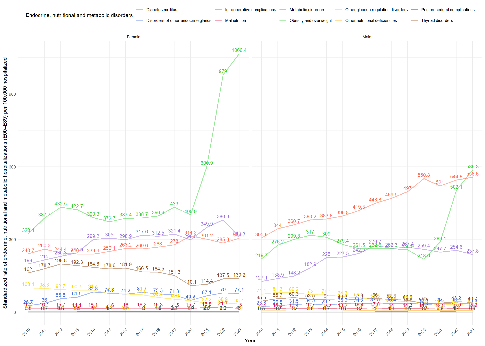
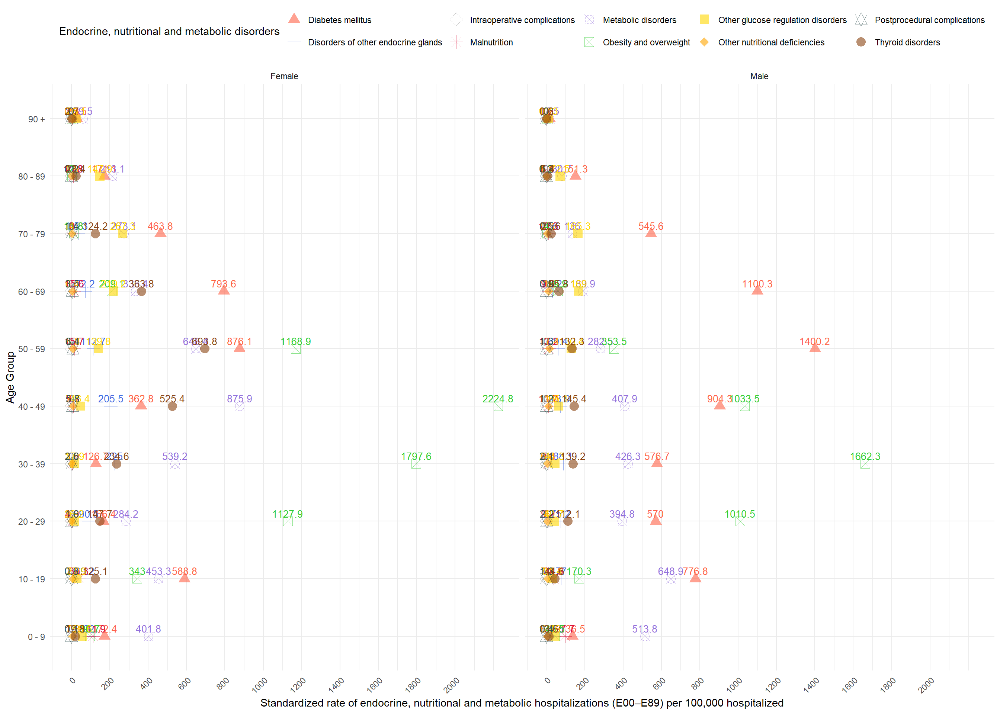
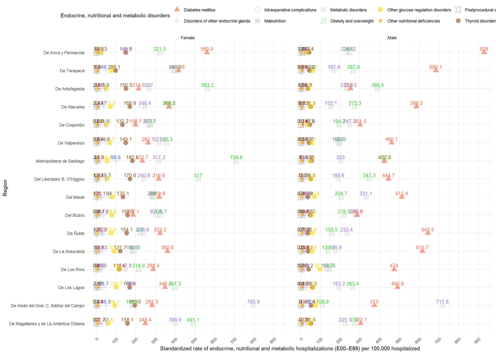

![]()
Code
################################################################################
# Análisis de Enfermedades Endocrinas, Nutricionales y Metabólicas E00-E89
# Chile 2010-2023
################################################################################
# Cargar paquetes
install_and_load <- function(package) {
if (!require(package, character.only = TRUE)) {
utils::install.packages(package)
library(package, character.only = TRUE)
}
}
packages <- c("devtools", "renv", "tidyverse", "janitor", "data.table", "flexsurv","readxl",
"kableExtra", "reticulate", "FactoMineR", "factoextra", "knitr","plotly",
"censo2017", "ggbreak", "patchwork","latex2exp","chilemapas","biscale",
"sf","DT","qrcode")
invisible(capture.output(sapply(packages, install_and_load)))
opts_chunk$set(
warning = FALSE,
message = FALSE
)
rm(list = ls())
################################################################################
# Administración de Datos
################################################################################
# HOSP Data
output_file <- paste0(gsub("docs", "", getwd()), "/data/data_output/HOSP.rds")
if (!file.exists(output_file)) {
files <- list.files(path = paste0(gsub("docs", "", getwd()), "data/EGRESOS/"),
pattern = "\\.csv$", full.names = TRUE)
required_columns <- c("SEXO", "GRUPO_EDAD", "ETNIA",
"GLOSA_PAIS_ORIGEN", "COMUNA_RESIDENCIA", "GLOSA_COMUNA_RESIDENCIA",
"REGION_RESIDENCIA", "GLOSA_REGION_RESIDENCIA", "PREVISION",
"GLOSA_PREVISION", "ANO_EGRESO", "DIAG1", "DIAG2",
"DIAS_ESTADA", "CONDICION_EGRESO")
read_file <- function(file) {
data <- read_delim(file, delim = ";")
data_selected <- data %>%
select(any_of(required_columns))
return(data_selected)
}
data_list <- lapply(files, read_file)
names(data_list) <- tools::file_path_sans_ext(basename(files))
HOSP <- bind_rows(data_list) %>%
filter(SEXO != "*")
saveRDS(HOSP, file = output_file)
} else {
HOSP <- readRDS(output_file)
}
HOSP <- HOSP %>%
mutate(across(where(is.character), ~ iconv(., from = "latin1", to = "UTF-8"))) %>%
mutate(
GRUPO_EDAD = as.character(GRUPO_EDAD),
GRUPO_EDAD = recode(GRUPO_EDAD,
`menor de un año` = "0 - 9",
`1 a 9` = "0 - 9"),
GRUPO_EDAD = gsub(" a ", " - ", GRUPO_EDAD),
GRUPO_EDAD = gsub(" y más", " +", GRUPO_EDAD),
GRUPO_EDAD = as.factor(GRUPO_EDAD)
) %>%
filter(SEXO == "HOMBRE" | SEXO == "MUJER") %>%
mutate(SEXO = case_when(
SEXO == "HOMBRE" ~ "Male",
SEXO == "MUJER" ~ "Female",
TRUE ~ NA_character_
))
# Población Data
P_DATA <- read_excel(paste0(gsub("docs", "", getwd()), "/data/TOTAL/P_Data_Extract_From_World_Development_Indicators.xlsx"),
col_types = c("skip", "skip", "text",
"text", "numeric", "numeric", "numeric",
"numeric", "numeric", "numeric",
"numeric", "numeric", "numeric",
"numeric", "numeric", "numeric",
"numeric", "numeric")) %>%
filter(grepl("FE.5Y$", `Series Code`) | grepl("POP.TOTL.FE.IN$", `Series Code`)) %>%
pivot_longer(cols = starts_with("20"),
names_to = "Year",
values_to = "Population") %>%
complete(`Series Code`, Year) %>%
select(-1) %>%
pivot_wider(names_from = `Series Name`,
values_from = Population) %>%
mutate(across(c(-Year,-`Population, female`), ~ . * `Population, female`/100)) %>%
pivot_longer(cols = -Year,
names_to = "GRUPO_EDAD",
values_to = "n") %>%
mutate(Grupo_Edad_Agrupado = case_when(
grepl("00-04|05-09", GRUPO_EDAD) ~ "0 - 9",
grepl("10-14|15-19", GRUPO_EDAD) ~ "10 - 19",
grepl("20-24|25-29", GRUPO_EDAD) ~ "20 - 29",
grepl("30-34|35-39", GRUPO_EDAD) ~ "30 - 39",
grepl("40-44|45-49", GRUPO_EDAD) ~ "40 - 49",
grepl("50-54|55-59", GRUPO_EDAD) ~ "50 - 59",
grepl("60-64|65-69", GRUPO_EDAD) ~ "60 - 69",
grepl("70-74|75-79", GRUPO_EDAD) ~ "70 - 79",
grepl("80", GRUPO_EDAD) ~ "80 +",
TRUE ~ "Total"
)) %>%
group_by(Year, Grupo_Edad_Agrupado) %>%
summarise(n = sum(n, na.rm = TRUE)) %>%
mutate(Year = gsub(" \\[.*\\]", "", Year))
# Censo 2017 Data
output_file_censo <- paste0(gsub("docs", "", getwd()), "data/data_output/CENSO2017.rds")
if (!file.exists(output_file_censo)) {
censo_conectar()
censo_descargar()
CENSO2017 <- censo_tabla("personas")[,c(1,5,6)]
CENSO2017 <- CENSO2017 %>%
mutate(p09 = replace(p09, p09 %in% c(132, 131), NA)) %>%
mutate(p08 = replace(p08, p08 %in% c(3, 0), NA)) %>%
mutate(SEXO = factor(p08, levels = c(1, 2), labels = c("Male", "Female"))) %>%
mutate(GRUPO_EDAD = cut(p09,
breaks = c(-Inf, 9, 19, 29, 39, 49, 59, 69, 79, 89, Inf),
labels = c("0 - 9", "10 - 19", "20 - 29", "30 - 39", "40 - 49",
"50 - 59", "60 - 69", "70 - 79", "80 - 89", "90 +"),
right = FALSE))
saveRDS(CENSO2017, file = output_file_censo)
} else {
CENSO2017 <- readRDS(output_file_censo)
}
STDPOPULATION <- CENSO2017 %>%
group_by(GRUPO_EDAD, SEXO) %>%
summarise(n = n(), .groups = 'drop') %>%
mutate(POP_STD = n*100000/sum(n))
################################################################################
# ICD-10 Mapping para Enfermedades Endocrinas, Nutricionales y Metabólicas (E00-E89)
################################################################################
icd10_mapping <- c(
"E00-E07" = "Thyroid disorders",
"E08-E13" = "Diabetes mellitus",
"E15-E16" = "Other glucose regulation disorders",
"E20-E35" = "Disorders of other endocrine glands",
"E36" = "Intraoperative complications",
"E40-E46" = "Malnutrition",
"E50-E64" = "Other nutritional deficiencies",
"E65-E68" = "Obesity and overweight",
"E70-E88" = "Metabolic disorders",
"E89" = "Postprocedural complications"
)
# Función auxiliar para categorizar códigos E00-E89
categorize_e_code <- function(code) {
if (!grepl("^E", code)) return(NA)
code_num <- as.numeric(substr(code, 2, 3))
if (is.na(code_num)) return(NA)
if (code_num >= 0 && code_num <= 7) return("E00-E07")
if (code_num >= 8 && code_num <= 13) return("E08-E13")
if (code_num >= 15 && code_num <= 16) return("E15-E16")
if (code_num >= 20 && code_num <= 35) return("E20-E35")
if (code_num == 36) return("E36")
if (code_num >= 40 && code_num <= 46) return("E40-E46")
if (code_num >= 50 && code_num <= 64) return("E50-E64")
if (code_num >= 65 && code_num <= 68) return("E65-E68")
if (code_num >= 70 && code_num <= 88) return("E70-E88")
if (code_num == 89) return("E89")
return(NA)
}
################################################################################
# ANÁLISIS POR AÑO
################################################################################
HOSP_E00_E89 <- bind_rows(
# Casos anuales por edad y sexo
HOSP_E00_E89_YEAR <- HOSP %>%
filter(grepl("^E[0-8][0-9]", DIAG1)) %>%
group_by(ANO_EGRESO, GRUPO_EDAD, SEXO) %>%
summarise(n = n(), .groups = 'drop') %>%
mutate(across(everything(), ~na_if(., NA) %>% replace_na(0))) %>%
mutate(ANO_EGRESO = as.character(ANO_EGRESO)),
# Total (todos los años) por edad y sexo
HOSP_E00_E89_TOTAL <- HOSP %>%
filter(grepl("^E[0-8][0-9]", DIAG1)) %>%
group_by(GRUPO_EDAD, SEXO) %>%
summarise(n = n(), .groups = 'drop') %>%
mutate(across(everything(), ~na_if(., NA) %>% replace_na(0))) %>%
mutate(ANO_EGRESO = "Total")
)
# Totales por edad, sexo y año (para denominador)
TOTALS_HOSP_E00_E89 <- bind_rows(
# Total pop (todos los años) por edad y sexo
TOTALS_HOSP_E00_E89_TOTAL_POP <- HOSP %>%
group_by(GRUPO_EDAD, SEXO) %>%
summarise(total_pop = n(), .groups = 'drop') %>%
mutate(ANO_EGRESO = "Total"),
# Total pop por año, edad y sexo
TOTALS_HOSP_E00_E89_YEAR_POP <- HOSP %>%
group_by(GRUPO_EDAD, SEXO, ANO_EGRESO) %>%
summarise(total_pop = n(), .groups = 'drop')
)
# Cálculo de tasas y DSR por edad y sexo
HOSP_E00_E89_RATES <- HOSP_E00_E89 %>%
left_join(TOTALS_HOSP_E00_E89,
by = c("GRUPO_EDAD", "SEXO", "ANO_EGRESO")) %>%
left_join(STDPOPULATION[, c("GRUPO_EDAD","SEXO","POP_STD")],
by = c("GRUPO_EDAD","SEXO")) %>%
mutate(
rates = n / total_pop,
DSR_pop = POP_STD * rates
)
# Se suman las DSR por (año, sexo)
HOSP_E00_E89_DSR <- HOSP_E00_E89_RATES %>%
group_by(ANO_EGRESO, SEXO) %>%
summarise(`DSR E00-E89 Hosp. per 100,000` = sum(DSR_pop),
.groups = 'drop')
# Tabla resumen
TABLE1 <- HOSP %>%
group_by(ANO_EGRESO, SEXO) %>%
summarise(N = n(), .groups = 'drop') %>%
bind_rows(
summarise(.,
ANO_EGRESO = "Total",
N = sum(N),
SEXO = unique(SEXO))
) %>%
left_join(
HOSP %>%
filter(grepl("^E[0-8][0-9]", DIAG1)) %>%
group_by(ANO_EGRESO, SEXO) %>%
summarise(`E00-E89 Hosp.` = n(), .groups = 'drop') %>%
bind_rows(
summarise(.,
ANO_EGRESO = "Total",
`E00-E89 Hosp.` = sum(`E00-E89 Hosp.`),
SEXO = unique(SEXO))
),
by = c("ANO_EGRESO","SEXO")
) %>%
left_join(HOSP_E00_E89_DSR, by = c("ANO_EGRESO","SEXO")) %>%
rename(
Year = ANO_EGRESO,
`N of Hospitalization` = N
)
################################################################################
# ANÁLISIS NACIONAL
################################################################################
HOSP_E00_E89_NAT <- HOSP %>%
filter(grepl("^E[0-8][0-9]", DIAG1)) %>%
mutate(DIAG1_CAT = sapply(substr(DIAG1, 1, 3), categorize_e_code)) %>%
filter(!is.na(DIAG1_CAT)) %>%
group_by(ANO_EGRESO, GRUPO_EDAD, SEXO, DIAG1_CAT) %>%
summarise(n = n(), .groups = 'drop') %>%
complete(
ANO_EGRESO,
GRUPO_EDAD,
SEXO,
DIAG1_CAT = c("E00-E07","E08-E13","E15-E16","E20-E35","E36",
"E40-E46","E50-E64","E65-E68","E70-E88","E89"),
fill = list(n = 0)
) %>%
mutate(across(everything(), ~na_if(., NA) %>% replace_na(0))) %>%
mutate(ANO_EGRESO = as.character(ANO_EGRESO)) %>%
rename(DIAG1 = DIAG1_CAT)
# Totales nacionales por edad, sexo y año
TOTALS_HOSP_E00_E89_NAT <- HOSP %>%
group_by(GRUPO_EDAD, SEXO, ANO_EGRESO) %>%
summarise(total_pop = n(), .groups = 'drop')
HOSP_E00_E89_RATES_NAT <- HOSP_E00_E89_NAT %>%
left_join(TOTALS_HOSP_E00_E89_NAT,
by = c("GRUPO_EDAD","SEXO","ANO_EGRESO")) %>%
left_join(STDPOPULATION[, c("GRUPO_EDAD","SEXO","POP_STD")],
by = c("GRUPO_EDAD","SEXO")) %>%
mutate(
rates = n / total_pop,
DSR_pop = POP_STD * rates
)
HOSP_E00_E89_DSR_NAT <- HOSP_E00_E89_RATES_NAT %>%
group_by(ANO_EGRESO, SEXO, DIAG1) %>%
summarise(DSR_HOSP = sum(DSR_pop),
.groups = 'drop')
################################################################################
# ANÁLISIS REGIONAL
################################################################################
HOSP_E00_E89_REG <- HOSP %>%
filter(grepl("^E[0-8][0-9]", DIAG1)) %>%
mutate(DIAG1_CAT = sapply(substr(DIAG1, 1, 3), categorize_e_code)) %>%
filter(!is.na(DIAG1_CAT)) %>%
group_by(ANO_EGRESO, GLOSA_REGION_RESIDENCIA, GRUPO_EDAD, SEXO, DIAG1_CAT) %>%
summarise(n = n(), .groups = 'drop') %>%
complete(
ANO_EGRESO,
GLOSA_REGION_RESIDENCIA,
GRUPO_EDAD,
SEXO,
DIAG1_CAT = c("E00-E07","E08-E13","E15-E16","E20-E35","E36",
"E40-E46","E50-E64","E65-E68","E70-E88","E89"),
fill = list(n = 0)
) %>%
mutate(across(everything(), ~na_if(., NA) %>% replace_na(0))) %>%
mutate(ANO_EGRESO = as.character(ANO_EGRESO)) %>%
rename(DIAG1 = DIAG1_CAT)
# Totales regionales: se completan filas "Total"
HOSP_E00_E89_REG_RATES_TOTAL <- HOSP %>%
filter(grepl("^E[0-8][0-9]", DIAG1)) %>%
mutate(DIAG1_CAT = sapply(substr(DIAG1, 1, 3), categorize_e_code)) %>%
filter(!is.na(DIAG1_CAT)) %>%
group_by(GLOSA_REGION_RESIDENCIA, GRUPO_EDAD, SEXO, DIAG1_CAT) %>%
summarise(n = n(), .groups = 'drop') %>%
complete(
GLOSA_REGION_RESIDENCIA,
GRUPO_EDAD,
SEXO,
DIAG1_CAT = c("E00-E07","E08-E13","E15-E16","E20-E35","E36",
"E40-E46","E50-E64","E65-E68","E70-E88","E89"),
fill = list(n = 0)
) %>%
mutate(across(everything(), ~na_if(., NA) %>% replace_na(0))) %>%
mutate(ANO_EGRESO = "Total") %>%
rename(DIAG1 = DIAG1_CAT)
# Se unen para tener año + "Total"
HOSP_E00_E89_REG <- bind_rows(HOSP_E00_E89_REG, HOSP_E00_E89_REG_RATES_TOTAL)
# Totales regionales de población
TOTALS_HOSP_E00_E89_REG <- HOSP %>%
group_by(GRUPO_EDAD, SEXO, GLOSA_REGION_RESIDENCIA, ANO_EGRESO) %>%
summarise(total_pop = n(), .groups = 'drop')
TOTALS_HOSP_E00_E89_REG_TOTAL <- HOSP %>%
group_by(GRUPO_EDAD, SEXO, GLOSA_REGION_RESIDENCIA) %>%
summarise(total_pop = n(), .groups = 'drop') %>%
mutate(ANO_EGRESO = "Total")
# Se unen para año normal + "Total"
TOTALS_HOSP_E00_E89_REG <- bind_rows(TOTALS_HOSP_E00_E89_REG,
TOTALS_HOSP_E00_E89_REG_TOTAL)
# Cálculo de tasas regionales por edad y sexo
HOSP_E00_E89_RATES_REG <- HOSP_E00_E89_REG %>%
left_join(TOTALS_HOSP_E00_E89_REG,
by = c("GRUPO_EDAD","SEXO","ANO_EGRESO","GLOSA_REGION_RESIDENCIA")) %>%
left_join(STDPOPULATION[, c("GRUPO_EDAD","SEXO","POP_STD")],
by = c("GRUPO_EDAD","SEXO")) %>%
mutate(
rates = n / total_pop,
DSR_pop = POP_STD * rates
) %>%
filter(!GLOSA_REGION_RESIDENCIA %in% c("Ignorada", "Extranjero"))
# Se agrupa por año, región y sexo para sumar el total de DSR
HOSP_E00_E89_DSR_REG <- HOSP_E00_E89_RATES_REG %>%
group_by(ANO_EGRESO, GLOSA_REGION_RESIDENCIA, SEXO, DIAG1) %>%
summarise(DSR_HOSP = sum(DSR_pop), .groups = 'drop') %>%
filter(!GLOSA_REGION_RESIDENCIA %in% c("Ignorada", "Extranjero"))
################################################################################
# REGIONAL TOTAL
################################################################################
HOSP_E00E89_REG_TOT <- HOSP %>%
filter(grepl("^E[0-8][0-9]", DIAG1)) %>%
group_by(ANO_EGRESO, GLOSA_REGION_RESIDENCIA, GRUPO_EDAD, SEXO) %>%
summarise(n = n(), .groups = 'drop') %>%
complete(
ANO_EGRESO,
GLOSA_REGION_RESIDENCIA,
GRUPO_EDAD,
SEXO,
fill = list(n = 0)
) %>%
mutate(across(everything(), ~na_if(., NA) %>% replace_na(0))) %>%
mutate(ANO_EGRESO = as.character(ANO_EGRESO))
HOSP_E00E89_REG_TOT_RATES_TOTAL <- HOSP %>%
filter(grepl("^E[0-8][0-9]", DIAG1)) %>%
group_by(GLOSA_REGION_RESIDENCIA, GRUPO_EDAD, SEXO) %>%
summarise(n = n(), .groups = 'drop') %>%
complete(
GLOSA_REGION_RESIDENCIA,
GRUPO_EDAD,
SEXO,
fill = list(n = 0)
) %>%
mutate(across(everything(), ~na_if(., NA) %>% replace_na(0))) %>%
mutate(ANO_EGRESO = "Total")
HOSP_E00E89_REG_TOT <- bind_rows(HOSP_E00E89_REG_TOT,
HOSP_E00E89_REG_TOT_RATES_TOTAL)
TOTALS_HOSP_E00E89_REG_TOT <- HOSP %>%
group_by(GRUPO_EDAD, SEXO, GLOSA_REGION_RESIDENCIA, ANO_EGRESO) %>%
summarise(total_pop = n(), .groups = 'drop')
TOTALS_HOSP_E00E89_REG_TOT_TOTAL <- HOSP %>%
group_by(GRUPO_EDAD, SEXO, GLOSA_REGION_RESIDENCIA) %>%
summarise(total_pop = n(), .groups = 'drop') %>%
mutate(ANO_EGRESO = "Total")
TOTALS_HOSP_E00E89_REG_TOT <- bind_rows(TOTALS_HOSP_E00E89_REG_TOT,
TOTALS_HOSP_E00E89_REG_TOT_TOTAL)
# Tasas totales regionales (para todos los E00–E89) por edad y sexo
HOSP_E00E89_RATES_REG_TOT <- HOSP_E00E89_REG_TOT %>%
left_join(TOTALS_HOSP_E00E89_REG_TOT,
by = c("GRUPO_EDAD","SEXO","ANO_EGRESO","GLOSA_REGION_RESIDENCIA")) %>%
left_join(STDPOPULATION[, c("GRUPO_EDAD","SEXO","POP_STD")],
by = c("GRUPO_EDAD","SEXO")) %>%
mutate(
rates = n / total_pop,
DSR_pop = POP_STD * rates
) %>%
filter(!GLOSA_REGION_RESIDENCIA %in% c("Ignorada", "Extranjero"))
HOSP_E00E89_DSR_REG_TOT <- HOSP_E00E89_RATES_REG_TOT %>%
group_by(ANO_EGRESO, GLOSA_REGION_RESIDENCIA, SEXO) %>%
summarise(DSR_HOSP = sum(DSR_pop), .groups = 'drop') %>%
filter(!GLOSA_REGION_RESIDENCIA %in% c("Ignorada", "Extranjero"))
################################################################################
# Mapeo de nombres descriptivos
################################################################################
HOSP_E00_E89_RATES_NAT <- HOSP_E00_E89_RATES_NAT %>%
mutate(DIAG1_full = recode(DIAG1, !!!icd10_mapping))
HOSP_E00_E89_DSR_NAT <- HOSP_E00_E89_DSR_NAT %>%
mutate(DIAG1_full = recode(DIAG1, !!!icd10_mapping))
HOSP_E00_E89_RATES_REG <- HOSP_E00_E89_RATES_REG %>%
mutate(DIAG1_full = recode(DIAG1, !!!icd10_mapping))
HOSP_E00_E89_DSR_REG <- HOSP_E00_E89_DSR_REG %>%
mutate(DIAG1_full = recode(DIAG1, !!!icd10_mapping))
################################################################################
# VISUALIZACIONES
################################################################################
# Tabla resumen
datatable(TABLE1 %>%
mutate(across(everything(), ~ ifelse(is.na(.), "", .))) %>%
mutate(Year = as.factor(Year),
SEXO = as.factor(SEXO)),
filter = 'top',
options = list(
pageLength = 20,
scrollX = TRUE,
scrollY = "800px",
autoWidth = TRUE)
)Code
# Figura 1: Tendencias temporales
ggplot(HOSP_E00_E89_DSR_NAT,
aes(x = as.factor(ANO_EGRESO),
y = DSR_HOSP,
color = DIAG1_full,
group = DIAG1_full)) +
geom_line(size = 0.8, alpha = 0.5) +
geom_text(aes(label = round(DSR_HOSP, 1)),
vjust = -0.5,
size = 3.5,
show.legend = FALSE) +
labs(
x = "Year",
y = "Standardized rate of endocrine, nutritional and metabolic hospitalizations (E00–E89) per 100,000 hospitalized",
color = "Endocrine, nutritional and metabolic disorders"
) +
theme_minimal() +
scale_color_manual(values = c(
"Thyroid disorders" = "#8B4513",
"Diabetes mellitus" = "#FF6347",
"Other glucose regulation disorders" = "#FFD700",
"Disorders of other endocrine glands" = "#4169E1",
"Intraoperative complications" = "#808080",
"Malnutrition" = "#DC143C",
"Other nutritional deficiencies" = "#FFA500",
"Obesity and overweight" = "#32CD32",
"Metabolic disorders" = "#9370DB",
"Postprocedural complications" = "#2F4F4F"
)) +
facet_wrap(~SEXO) +
theme(
axis.text.x = element_text(angle = 45, hjust = 1),
legend.position = "top"
)
Code
ggsave("fig1_enmd.png", dpi = 1200, width = 10, height = 8)
# Figura 2: Distribución por edad
HOSP_E00_E89_RATES_NAT %>%
group_by(GRUPO_EDAD, DIAG1_full, SEXO) %>%
summarise(DSR_total = sum(DSR_pop), .groups = "drop") %>%
ggplot(aes(
x = GRUPO_EDAD,
y = DSR_total,
shape = DIAG1_full,
color = DIAG1_full
)) +
geom_point(size = 4, alpha = 0.6) +
geom_text(
aes(label = round(DSR_total, 1)),
vjust = -0.5,
size = 3.5,
show.legend = FALSE
) +
scale_shape_manual(values = c(
"Thyroid disorders" = 16,
"Diabetes mellitus" = 17,
"Other glucose regulation disorders" = 15,
"Disorders of other endocrine glands" = 3,
"Intraoperative complications" = 5,
"Malnutrition" = 8,
"Other nutritional deficiencies" = 18,
"Obesity and overweight" = 7,
"Metabolic disorders" = 13,
"Postprocedural complications" = 11
)) +
scale_color_manual(values = c(
"Thyroid disorders" = "#8B4513",
"Diabetes mellitus" = "#FF6347",
"Other glucose regulation disorders" = "#FFD700",
"Disorders of other endocrine glands" = "#4169E1",
"Intraoperative complications" = "#808080",
"Malnutrition" = "#DC143C",
"Other nutritional deficiencies" = "#FFA500",
"Obesity and overweight" = "#32CD32",
"Metabolic disorders" = "#9370DB",
"Postprocedural complications" = "#2F4F4F"
)) +
labs(
x = "Age Group",
y = "Standardized rate of endocrine, nutritional and metabolic hospitalizations (E00–E89) per 100,000 hospitalized",
color = "Endocrine, nutritional and metabolic disorders",
shape = "Endocrine, nutritional and metabolic disorders"
) +
theme_minimal() +
theme(
axis.text.x = element_text(angle = 45, hjust = 1),
legend.position = "top"
) +
scale_x_discrete(limits = levels(HOSP_E00_E89_RATES_NAT$GRUPO_EDAD)) +
scale_y_continuous(breaks = seq(0, 2000, by = 200)) +
coord_flip() +
facet_wrap(~SEXO)
Code
ggsave("fig2_enmd.png", dpi = 1200, width = 10, height = 8)
# Figura 3: Análisis regional
region_order <- c(
"De Arica y Parinacota",
"De Tarapacá",
"De Antofagasta",
"De Atacama",
"De Coquimbo",
"De Valparaíso",
"Metropolitana de Santiago",
"Del Libertador B. O'Higgins",
"Del Maule",
"Del Bíobío",
"De Ñuble",
"De La Araucanía",
"De Los Ríos",
"De Los Lagos",
"De Aisén del Gral. C. Ibáñez del Campo",
"De Magallanes y de La Antártica Chilena"
)
HOSP_E00_E89_DSR_REG <- HOSP_E00_E89_DSR_REG %>%
mutate(GLOSA_REGION_RESIDENCIA = factor(GLOSA_REGION_RESIDENCIA, levels = region_order))
HOSP_E00_E89_DSR_REG %>%
filter(ANO_EGRESO == "Total") %>%
ggplot(aes(x = GLOSA_REGION_RESIDENCIA,
y = DSR_HOSP,
shape = DIAG1_full,
color = DIAG1_full)) +
geom_point(size = 4, alpha = 0.6) +
geom_text(aes(label = round(DSR_HOSP, 1)),
vjust = -0.5,
size = 3.5,
show.legend = FALSE) +
scale_shape_manual(values = c(
"Thyroid disorders" = 16,
"Diabetes mellitus" = 17,
"Other glucose regulation disorders" = 15,
"Disorders of other endocrine glands" = 3,
"Intraoperative complications" = 5,
"Malnutrition" = 8,
"Other nutritional deficiencies" = 18,
"Obesity and overweight" = 7,
"Metabolic disorders" = 13,
"Postprocedural complications" = 11
)) +
scale_color_manual(values = c(
"Thyroid disorders" = "#8B4513",
"Diabetes mellitus" = "#FF6347",
"Other glucose regulation disorders" = "#FFD700",
"Disorders of other endocrine glands" = "#4169E1",
"Intraoperative complications" = "#808080",
"Malnutrition" = "#DC143C",
"Other nutritional deficiencies" = "#FFA500",
"Obesity and overweight" = "#32CD32",
"Metabolic disorders" = "#9370DB",
"Postprocedural complications" = "#2F4F4F"
)) +
facet_wrap(~SEXO) +
labs(
x = "Region",
y = "Standardized rate of endocrine, nutritional and metabolic hospitalizations (E00–E89) per 100,000 hospitalized",
color = "Endocrine, nutritional and metabolic disorders",
shape = "Endocrine, nutritional and metabolic disorders"
) +
theme_minimal() +
theme(
plot.title = element_text(hjust = 0.5, size = 16),
axis.text.x = element_text(angle = 45, hjust = 1),
legend.position = "top"
) +
scale_x_discrete(limits = rev(region_order)) +
scale_y_continuous(breaks = seq(0, 1000, by = 100)) +
coord_flip()
Code
ggsave("fig3_enmd.png", dpi = 1200, width = 12, height = 8)
# Mapa regional
chile_regions <- generar_regiones(mapa = chilemapas::mapa_comunas) %>%
mutate(
region_name = recode(codigo_region,
"01" = "De Tarapacá",
"02" = "De Antofagasta",
"03" = "De Atacama",
"04" = "De Coquimbo",
"05" = "De Valparaíso",
"06" = "Del Libertador B. O'Higgins",
"07" = "Del Maule",
"08" = "Del Bíobío",
"09" = "De La Araucanía",
"10" = "De Los Lagos",
"11" = "De Aisén del Gral. C. Ibáñez del Campo",
"12" = "De Magallanes y de La Antártica Chilena",
"13" = "Metropolitana de Santiago",
"14" = "De Los Ríos",
"15" = "De Arica y Parinacota",
"16" = "De Ñuble"
)
)
# Combinar datos para ambos sexos
HOSP_E00_E89_DSR_REG_combined <- HOSP_E00_E89_DSR_REG %>%
filter(ANO_EGRESO == "Total") %>%
group_by(GLOSA_REGION_RESIDENCIA, SEXO) %>%
summarise(DSR_HOSP = sum(DSR_HOSP, na.rm = TRUE))
# Unir con el mapa y preparar geometrías
plot_data_both <- HOSP_E00_E89_DSR_REG_combined %>%
left_join(chile_regions, by = c("GLOSA_REGION_RESIDENCIA" = "region_name")) %>%
mutate(centroid = st_centroid(geometry))
# Crear el gráfico con facetas
ggplot(plot_data_both) +
geom_sf(aes(fill = DSR_HOSP, geometry = geometry),
color = "white", size = 0.3) +
geom_segment(data = filter(plot_data_both, SEXO == "Female"),
aes(x = st_coordinates(centroid)[, 1],
y = st_coordinates(centroid)[, 2],
xend = st_coordinates(centroid)[, 1] - 2,
yend = st_coordinates(centroid)[, 2]),
color = "turquoise4", size = 0.5,
arrow = arrow(length = unit(0.1, "inches"))) +
geom_text(data = filter(plot_data_both, SEXO == "Female"),
aes(label = GLOSA_REGION_RESIDENCIA,
x = st_coordinates(centroid)[, 1] - 2,
y = st_coordinates(centroid)[, 2]),
size = 2.5, color = "purple4", hjust = 1) +
scale_fill_viridis_c(option = "D", alpha = 0.8,
name = "Standardized rate per 100,000") +
labs(title = "Standardized rate of endocrine, nutritional and metabolic hospitalizations by region and sex",
x = NULL, y = NULL) +
facet_wrap(~ SEXO, ncol = 2) +
theme_minimal(base_size = 13) +
theme(
axis.text = element_blank(),
axis.ticks = element_blank(),
panel.grid = element_blank(),
plot.title = element_text(hjust = 0.5, face = "bold", size = 16),
legend.position = "bottom",
legend.key.width = unit(2, "cm"),
strip.text = element_text(size = 14, face = "bold"),
panel.spacing = unit(0, "lines")
) +
coord_sf(xlim = c(-90, -65), ylim = c(-55, -15))Code
ggsave("fig_combined_enmd.png", dpi = 1200, width = 14, height = 10)